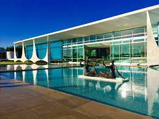
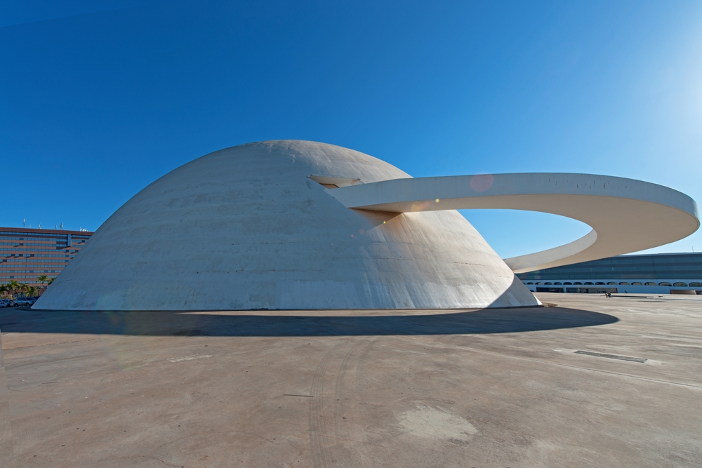
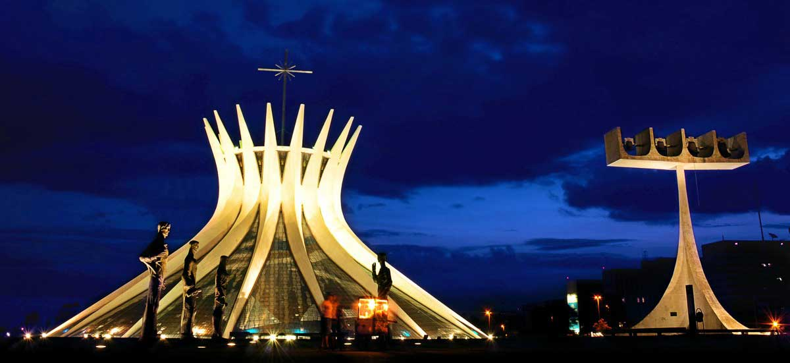

O Palácio da Alvorada, projetado por Oscar Niemeyer, é uma das mais importantes edificações do modernismo arquitetônico brasileiro e o primeiro prédio construído em alvenaria na nova capital. Está localizado numa península que divide o Lago Paranoá em Lago Sul e Lago Norte e abriga a residência oficial do Presidente da República.
Antes de qualquer coisa, ambos são lugares diferentes, OK? Contudo, os dois projetos foram assinados por Niemeyer, daí sua imponência. A Biblioteca Nacional tem cerca de 40 mil exemplares, das mais variadas áreas, e é aberta ao público. Ao mesmo tempo, recebe eventos culturais, como exposições e palestras, e disponibiliza acesso grátis ao wi-fi.
Antes de qualquer coisa, uma curiosidade: você sabia que o que dá pra ver do lado de fora é apenas o “telhado” da igreja? Pois é! A partir de uma rampa você tem acesso ao seu interior, que é tão interessante quanto o exterior. São mais ou menos 2 mil m² só de vitrais, e a luz do sol pode fazer com que as cores variem dependendo do momento em que você olhar. De quebra, lá dentro fica uma réplica perfeita da “Pietá“, uma das obras-primas de Michelângelo e cujo original descansa na Basílica de São Pedro, no Vaticano.
Para mais informações sobre pontos turisticos de brasilia acessem o link